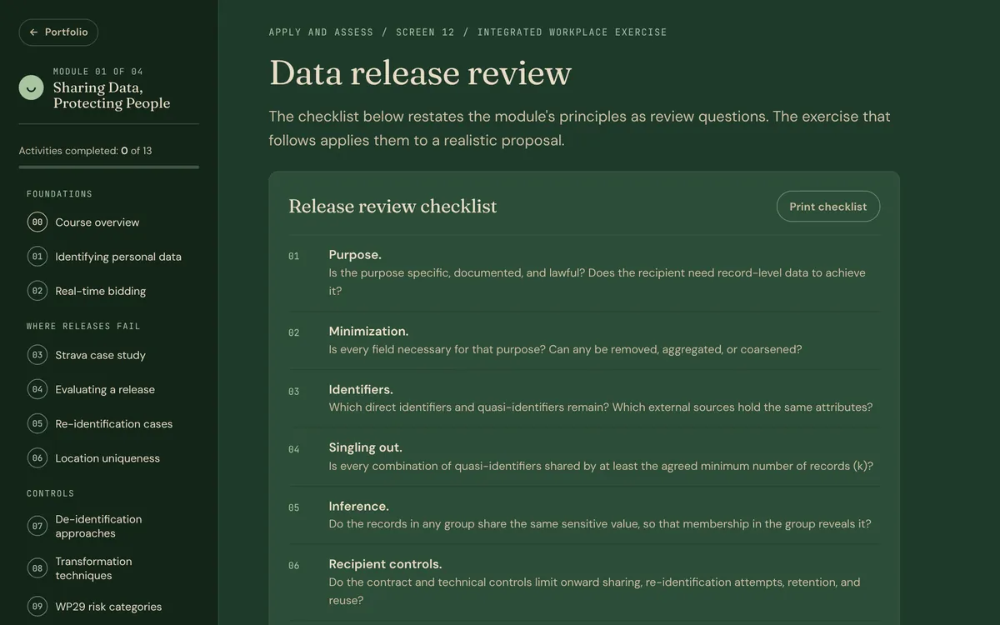

Technical training
Sharing Data, Protecting People
A self-paced module for staff who prepare, request, or approve data releases. It shows how data stripped of names can still identify people, and gives reviewers a structured way to decide whether a release should go ahead.
- Project type
- Interactive technical training module
- Audience
- Privacy, compliance, product, engineering, analytics, and data governance staff
- My role
- Design, writing, and build
- Status
- In revision Independent work sample
- Problem
- Teams remove names and IDs and assume a dataset is anonymous. Quasi-identifiers such as ZIP code, birth date, and sex, combined with outside data, can still single people out.
- Deliverables
- Module 01 of a proposed four-module program: 15 screens, 11 practice activities, a release-review exercise, an eight-question knowledge check, a printable review checklist
- Format
- Self-paced, 45 to 60 minutes; every screen reachable from the contents menu
- Tools
- Hand-coded HTML, CSS, and JavaScript; no tracking and no data collection
Status. This module is going through a separate instructional, technical, and editorial revision, so it sits in Additional Work for now. It is a portfolio demonstration: it is not connected to a learning management system and records nothing. Modules 02 to 04 are planned and have not been built.

The problem
Organizations share data with vendors, researchers, and partners every day, and the usual safeguard is to remove names. Published research and documented incidents show that this often isn't enough. A few ordinary attributes, matched against another source, can identify a person; aggregated activity data can expose sensitive locations; and once a copy is shared it usually can't be recalled.
The people who approve releases are spread across privacy, product, engineering, and analytics. Many of them are not privacy specialists, so the module needed to give them a working method, with enough of the underlying measures to judge risk.
AssumedThe learner population and the gap are portfolio assumptions. No organization supplied data.
Objectives and alignment
The module's goal is that learners can review a proposed release and recommend, with a documented rationale, whether it should proceed with safeguards, be modified, be escalated, or be declined. Six objectives support it, and the overview screen shows each objective's practice and check screens.
| Objective | Practice | Checked in |
|---|---|---|
| Classify attributes as direct identifiers, quasi-identifiers, or sensitive attributes, and explain when context changes the classification | Screen 01 | 12, 13 |
| Trace how personal data moves through a real-time bidding auction and where disclosure occurs | Screen 02 | 13 |
| Explain how external data enabled re-identification in documented cases; distinguish record uniqueness from identification | Screens 03, 05, 06 | 12, 13 |
| Distinguish pseudonymization from anonymization and select techniques for modifying data | Screens 07, 08 | 12, 13 |
| Evaluate whether records can be singled out, linked, or used for inference, using k-anonymity and l-diversity where they apply | Screens 09–11 | 12, 13 |
| Recommend and justify a release decision for a realistic proposal | Screen 04 | 12, 13 |
Design decisions
-
Teach the mechanism through documented cases
- Design challenge
- "Removing names makes data anonymous" is an intuitive belief, and a definition of quasi-identifiers alone rarely dislodges it.
- Decision
- Walk learners through real cases in stages: the Massachusetts hospital records, the Strava heatmap, and the @PierreDelecto account, each with its sources.
- Rationale
- Seeing the same linkage mechanism succeed in different contexts makes the risk concrete and gives reviewers examples they can cite.
- Implementation
- Staged case walkthroughs and an illustrative map exploration, followed by a screen on what the cases have in common.
-
Let learners adjust the data and watch the measure change
- Design challenge
- K-anonymity is easy to define and hard to feel: the trade-off between protecting people and keeping data useful only shows up when you change the data.
- Decision
- Build a live model on a 60-record synthetic dataset where learners change the generalization level and suppression until the data meets k = 5.
- Rationale
- Manipulating the dataset shows directly how coarsening ZIP codes or ages merges groups, and how much detail is lost to get there.
- Implementation
- A grid of records grouped into equivalence classes, with an optional table view, updates as the settings change. An l-diversity screen follows to show what k-anonymity misses.
-
Assess with an integrated release review
- Design challenge
- Separate activities show that learners know each concept, not that they can combine them into a decision.
- Decision
- End with a fictional employee-wellness data request that learners work through in six ordered decisions, from identifying risks to justifying a recommendation.
- Rationale
- The exercise mirrors the actual review task, and fixing each decision once checked keeps learners from guessing their way through.
- Implementation
- A five-criterion rubric (risk identification, choice of safeguards, purpose and minimization, recommendation, justification) and a model reviewer response. An eight-question knowledge check follows, most of it set in new situations.
The module
Fifteen screens in five parts: foundations, where releases fail, controls, measuring residual risk, and apply and assess. A contents menu tracks which screens have been opened and which activities are complete. The completion summary states plainly that in a deployed version an LMS would record completion, for example through SCORM or xAPI.

Evaluation
In placeThe module is built toward WCAG 2.2 AA, with keyboard operation and screen-reader support, and cites its sources on each case. Its technical and functional QA is part of the revision now under way; that documentation is not yet published here.
ProposedA pilot with reviewers from two or three of the target functions, comparing their release decisions on a held-out scenario before and after the module, would show whether the method transfers to new proposals.
Status
In revision. Once the technical and functional review is complete, this module is a candidate for the Selected Work section, either in place of GEOL 1403 or in rotation depending on the role being applied for.